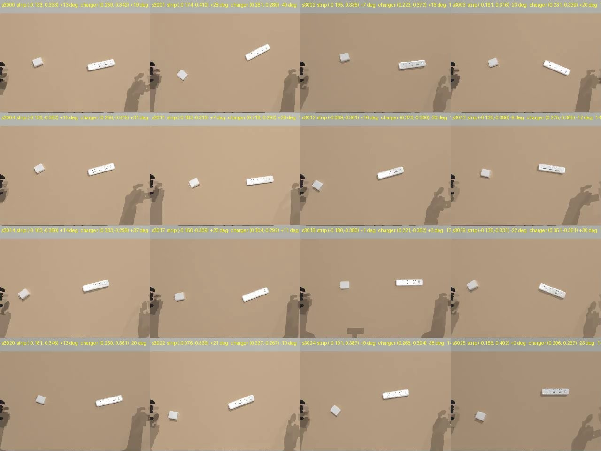
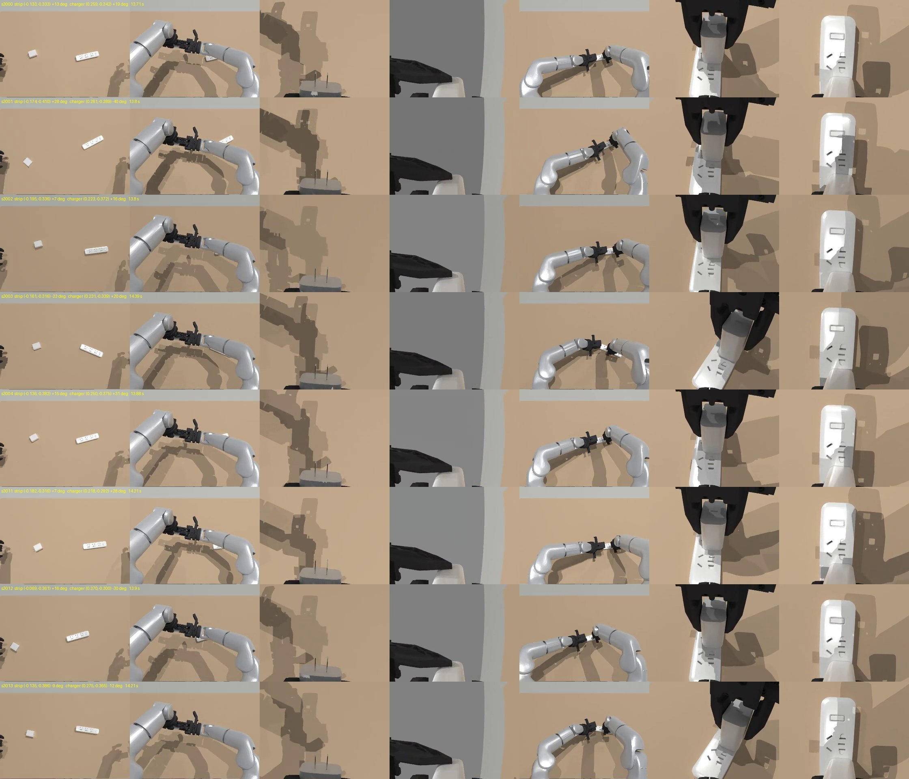

项目目标
RL token 分两个阶段，我们在两台机器人上各做一部分。
RL token 是什么
RL token（RLT，Xu et al. 2026，Physical Intelligence）的思路是：不直接对几十亿参数的 VLA 做强化学习，而是加一个小编码器，把 VLA 内部的表征压成一个向量，再在这个向量上训练一个很小的演员-评论家网络。
- 阶段一：VLA 照常做模仿学习微调，同时训练 RL token 的编码器和解码器。
- 阶段二：冻结 VLA，在 RL token 上做在线强化学习，修正最后一段精细动作。
两台机器人
- 松灵 Cobot Magic（真机）：双臂、头部加双腕三路相机。自采 100 条"双手交接、插排插充电头"示教，用来训练 VLA 和 RL token 阶段一。
- 宇树 R1-7a（仿真）：两条 7 自由度臂装在立柱上，配 Dex1-1 夹爪。真机数据分辨不了毫米级误差，所以搭了带真值的仿真，先在里面生成示教、训练基线。
进展总览
截至 2026-11-20。阶段二（在线强化学习）还没有开始，目前不能说"复现完成"。
| 内容 | 机器人 | 状态 | 结果 |
|---|---|---|---|
| RL token 阶段一模块 | Cobot Magic 真机数据 | 已完成 | 与 VLA 微调并行训练，开关模块前 10 步主线损失逐位相同 |
| VLA 全量微调（LingBot-VLA v2） | Cobot Magic 真机数据 | 已完成 | 4000 步开环手臂误差 0.83°；真机能夹起插头，交接时双臂相撞 |
| "RL token 里有没有毫米级几何"诊断 | Cobot Magic 真机数据 | 已完成 | RL token 不比它的输入差；真机数据分辨不了毫米级 |
| 立柱双臂模型与规范动作示教 | 宇树 R1-7a 仿真 | 已完成 | 128 条、5.4 万帧，每条约 14 秒，位置和朝向大范围随机 |
| 三个 VLA 基线训练 | 宇树 R1-7a 仿真 | 进行中 | SmolVLA、π0.5、LingBot-VLA 同一份数据，尚无闭环评测 |
| 训练提速 | — | 进行中 | LingBot-VLA 每步 8.2 → 6.2 秒；另外两个模型没有找到不改配方的办法 |
| RL token 阶段二（在线强化学习） | 两者 | 未开始 | — |
| 宇树 R1-7a 真机 | 宇树 R1-7a | 未开始 | — |
RL token 阶段一模块
在 Cobot Magic 的 100 条真机示教上，和 LingBot-VLA v2（约 64 亿参数）的全量微调一起训练。
结构
- 输入是 VLA 最后一层的前缀隐状态：三路图像、语言和对齐查询 token。这些在部署推理时同样会算出来。
- 2 层编码器加一个查询 token，读出 2048 维的 RL token。
- 2 层因果解码器只靠 RL token 重建整段前缀；解码器的上下文有 90% 被遮掉，逼它真的用 RL token。
- 约 2.9 亿参数，独立的 AdamW（学习率 1e-4）和梯度裁剪。
不干扰主线训练
- 输入先截断梯度，RL token 的损失不会回传到 VLA。
- 模块里所有随机数都用独立的随机数流。原因是注意力内核即使不开 dropout 也会推进全局随机状态，会改变 VLA 的噪声采样。
- 验证：开和关 RL token 各跑一遍，前 10 步的总损失、动作损失、辅助损失和梯度范数逐位相同。
- 每个 VLA 存档旁边都存一份配套的 RL token 权重。
VLA 本身训得怎么样
| 项目 | 结果 |
|---|---|
| 数据 | 100 条真机示教，约 10 万帧，30 帧/秒，三路相机 |
| 开环评测（训练集，4000 步） | 手臂关节平均误差 0.83°，92.9% 的动作块在容差内 |
| 真机试跑（4000 步权重） | 能夹起插头；交接时双臂相撞，任务失败 |
表征诊断：RL token 里有没有毫米级几何
插入需要毫米级的相对位置。我们用线性探针和小网络，从各种表征里读"插头离插孔还差多少"，看谁读得准。
| 用来预测的输入 | 中位误差（毫米） |
|---|---|
| RL token | 8.2 |
| 右腕相机的 VLA token | 8.3 |
| 三路相机的 VLA token | 8.3 |
| 左腕相机的 VLA token | 约 10 |
| 只用关节角 | 10.9 |
| 只知道"离插入还有几帧" | 11.5 |
| 头部相机的 VLA token | 约 11.8 |
| 直接假设"已经到位" | 16.8 |
得到的结论
- RL token 没有丢几何信息。它读出来的精度和它的输入（腕部相机 token）一样。
- 腕部相机比头部相机好 1.5 到 3 毫米。
- 提高图像分辨率没有帮助。同一个视觉编码器换成更高分辨率，误差不降。
- 真机数据分辨不了毫米级。修正标签后，最好的表征在最后 5 毫米内仍有约 3 毫米误差；模型能判断偏差方向，但幅度只预测出三到七成。约 100 条示教加事后标签不够。
宇树 R1-7a 仿真示教
两条 R1-7a 装在立柱上，肩部比桌面高 35 厘米。SAPIEN 光线追踪渲染，物理仿真 1200 Hz，插入是真实接触，不是贴上去的。
动作流程
- 左手竖直下降，夹起平放的充电头
- 左手把充电头送到桌面中间，右手同时到位
- 右手从尾部接过：上指伸进左手两指之间，下指托底
- 右手翻转充电头移到插孔上方，左手同时伸向排插
- 左手扶住排插，左腕相机正对插孔
- 右手竖直、缓慢插入
- 双手松开回位
随机化

怎么保证每条都能做成
- 先不渲染，只跑物理：在大范围里随机摆 359 个位置，169 个（47%）能按上面的规范动作做成。
- 只渲染做得成的摆位，做不成的直接剔除，不为了凑范围去歪着夹或斜着插。
- 每一帧检查两臂之间有没有碰撞，有接触的不要。
- 结果：128 条、54244 帧，全部插到底，每条 13.5 到 15.4 秒。
代价是摆位分布不均匀：远离机器人的位置和排插朝一个方向转的样本偏少。

三个基线训练
同一份仿真数据（128 条、三路相机、16 维状态和动作）上训练三个 VLA，作为 RL token 的起点。都在进行中，还没有闭环评测。
| SmolVLA | π0.5 | LingBot-VLA v2 | |
|---|---|---|---|
| 算力 | 2 × A40 | 8 × RTX 4090 | 4 × 96 GB 加速卡 |
| 全局批量 | 40 | 96 | 256（16 × 4 卡 × 累积 4 次） |
| 学习率 | 1e-4，余弦 | 2.5e-5，余弦 | 5e-5，恒定 |
| 优化器 | AdamW | AdamW | Muon |
| 关节动作 | 绝对角度 | 相对当前状态的增量 | 相对当前状态的增量 |
| 图像增广 | 无 | 有 | 无 |
| 计划步数 | 40000 | 20000 | 不设上限 |
| 当前步数（11-20 晚） | 约 15000 | 约 1500 | 约 2100 |
| 当前训练损失 | 约 0.010 | 约 0.003 | 约 0.008 |
训练提速
LingBot-VLA 每步要 8 秒，我们测了一步的时间花在哪，再逐项改。
LingBot-VLA v2，4 卡，全局批量 256
| 配置 | 秒/步 | 训练损失 |
|---|---|---|
| 基线（微批 16，累积 4 次） | 8.22 | — |
| 微批之间不重新切分参数 | 7.94 | 24 步与基线逐位相同 |
| 再加：Muon 每个矩阵只在一张卡上做正交化 | 6.22 | 与基线差在第 4 位小数 |
| 再加：梯度检查点，微批 32 × 累积 2 | 6.94 | — |
| 再加：梯度检查点，微批 64 × 累积 1 | 7.33 | — |
- 基线一步 8.2 秒里：反向 3.3 秒，前向 2.5 秒，优化器 1.3 秒，两个蒸馏老师 1.1 秒，等数据 0 秒。
- 前两项已经用在正式训练里。梯度检查点在这套硬件上是负收益。
- 把老师的输出提前算好缓存下来还在做：深度老师的缓存和在线计算逐位一致，视频老师的还在核对。
另外两个模型
π0.5，8 × RTX 4090
一步 5.8 秒里约 3.4 秒和批量大小无关，是卡间通信：这批卡不支持直连，参数分片每步都要经主机内存中转。调通信参数没有用，有的反而更慢。
SmolVLA，2 × A40
显卡已经算满：反向占 62%，前向占 31%，数据加载占 0。不改训练配方的开关加起来只快 3%。
还没做的
阶段二在线强化学习
在 RL token 上训练演员-评论家，这是 RL token 真正起作用的部分，目前没有开始。
仿真闭环评测
三个基线训完后，要在仿真里实际跑成功率，现在只有训练损失。
仿真里的表征比较
用仿真的真值重做"毫米级几何"诊断，这是真机数据做不了的。
宇树 R1-7a 真机
仿真里的相机内参和安装位姿按真机标定，但真机部署还没有开始。
Cobot Magic 交接失败
真机在交接时双臂相撞，需要补交接段的数据或加防撞。
仓库与复现
| 目录 | 内容 |
|---|---|
rl_token/ | RL token 阶段一模块、接入 LingBot-VLA 训练循环的补丁、随机数隔离的单元测试 |
representation_probe/ | 特征提取和探针脚本（表征诊断） |
sim_r1/ | 立柱双臂 URDF 生成、逆运动学、两臂碰撞检查、示教生成、布局搜索、转 LeRobot 格式 |
training/ | 三个模型的训练配置和数据接入代码 |
speedups/ | LingBot-VLA 的计时、两项提速补丁、老师输出缓存 |
仓库里没有的东西
- 第三方模型文件：宇树 R1-7a 和 Dex1-1 的网格与 URDF 请从宇树官方获取；排插和充电头模型来自 RoboDojo 基准的 plug_in_charger 任务素材。
- 模型代码和权重：LingBot-VLA v2、openpi（π0.5）、LeRobot（SmolVLA）请用各自的官方仓库；这里只有针对它们的补丁和配置。
- 真机数据和训练出的权重。